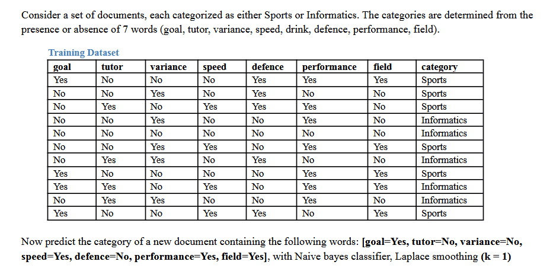
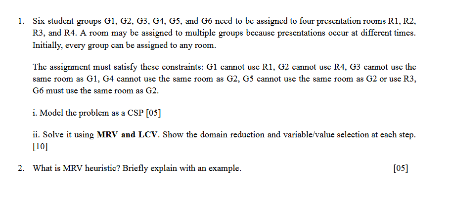

Extra exam-style questions, each solved step by step the way you would write it on paper
How to use this page. Each question is a screenshot of the original problem. Try it on paper first, then open its solution. For the full final-term sheet, see Final Practice Solutions.
Jump to: Naive Bayes · CSP

Ans:
Sports = 6 documents, Informatics = 5 documents, total = 11. Laplace smoothing with k = 1 and 2 classes adds 1 on top and 2 at the bottom:
Every word has 2 values (Yes / No), so add 1 to each count and 2 to the class total: c1 gives (count + 1)/8, c2 gives (count + 1)/7.
Why 8 and 7? Smoothing adds k to the count of every option of the attribute, not only the one being asked about. goal can be Yes or No, so both get +1 and the class total grows by 2:
Informatics has 5 documents, so its bottom is 5 + 2 = 7. Using 6 + 1 = 7 instead would give 4/7 + 4/7 = 8/7 > 1, which is impossible.
Rule: +k on top, +k × (number of options) on the bottom.
| Attribute | Options | Top | Bottom |
|---|---|---|---|
| goal (Yes / No) | 2 | count + 1 | class count + 2 |
| Age (youth / middle / senior) | 3 | count + 1 | class count + 3 |
| Weather (sunny / windy / rain / snowy) | 4 | count + 1 | class count + 4 |
✓ The handwritten notes' "Laplacian correction" example (pages 9–10) only corrects the class that has a zero count, by adding one virtual record per value. This question asks for Laplace smoothing with k = 1, so every count gets +1 for both classes, as above.
✓ P(X) is the same for both classes, so it is dropped (written ≅). Compare P(X|ci)P(ci) directly.
✓ The denominator for P(x|c) is the class total + 2 (6 + 2 = 8, 5 + 2 = 7), never 11 + 2.

Constraint graph (unary constraints written beside their node):
Apply the one-variable constraints before searching (node consistency):
| Variable | Initial domain | Unary constraint | Reduced domain |
|---|---|---|---|
| G1 | {R1, R2, R3, R4} | G1 ≠ R1 | {R2, R3, R4} |
| G2 | {R1, R2, R3, R4} | G2 ≠ R4 | {R1, R2, R3} |
| G3 | {R1, R2, R3, R4} | — | {R1, R2, R3, R4} |
| G4 | {R1, R2, R3, R4} | — | {R1, R2, R3, R4} |
| G5 | {R1, R2, R3, R4} | G5 ≠ R3 | {R1, R2, R4} |
| G6 | {R1, R2, R3, R4} | — | {R1, R2, R3, R4} |
Convention: forward checking after each assignment; MRV picks the variable with the fewest remaining values; a tie is broken by the degree heuristic (most constraints on unassigned variables), then by the lower group number; LCV picks the value that removes the fewest values from neighbouring domains; a remaining tie takes the lowest room number.
Trace (forward checking after every assignment; assigned values in bold):
| Step | G1 | G2 | G3 | G4 | G5 | G6 |
|---|---|---|---|---|---|---|
| After unary | R2, R3, R4 | R1, R2, R3 | R1, R2, R3, R4 | R1, R2, R3, R4 | R1, R2, R4 | R1, R2, R3, R4 |
| 1. G2 = R3 | R2, R3, R4 | R3 | R1, R2, R3, R4 | R1, R2, R4 | R1, R2, R4 | R3 |
| 2. G6 = R3 | R2, R3, R4 | R3 | R1, R2, R3, R4 | R1, R2, R4 | R1, R2, R4 | R3 |
| 3. G1 = R2 | R2 | R3 | R1, R3, R4 | R1, R2, R4 | R1, R2, R4 | R3 |
| 4. G3 = R1 | R2 | R3 | R1 | R1, R2, R4 | R1, R2, R4 | R3 |
| 5. G4 = R1 | R2 | R3 | R1 | R1 | R1, R2, R4 | R3 |
| 6. G5 = R1 | R2 | R3 | R1 | R1 | R1 | R3 |
✓ Step 1 is the key LCV decision: R1 and R2 would each remove a value from both G4 and G5, but R3 removes nothing from G5 because G5 already cannot use R3 — so R3 is least constraining (4 removals instead of 5).
✓ Check: G1 ≠ R1 ✓, G2 ≠ R4 ✓, G3 (R1) ≠ G1 (R2) ✓, G4 (R1) ≠ G2 (R3) ✓, G5 (R1) ≠ G2 and ≠ R3 ✓, G6 = G2 = R3 ✓. Several groups sharing R1 is allowed, because presentations happen at different times.
Minimum Remaining Values (MRV) is a variable-ordering heuristic for backtracking search: at each step, choose the unassigned variable that has the fewest legal values left in its domain. It is also called the "most constrained variable" or "fail-first" heuristic.
Example (Australia map colouring, colours {R, G, B}): after WA = Red and NT = Green, forward checking leaves SA with only {Blue}, while Q, NSW and V still have two or three colours. MRV picks SA next, because it has just 1 remaining value. In P2 above, the same thing happens in step 2: once G2 = R3, G6 is left with only {R3}, so MRV assigns G6 immediately.